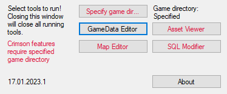
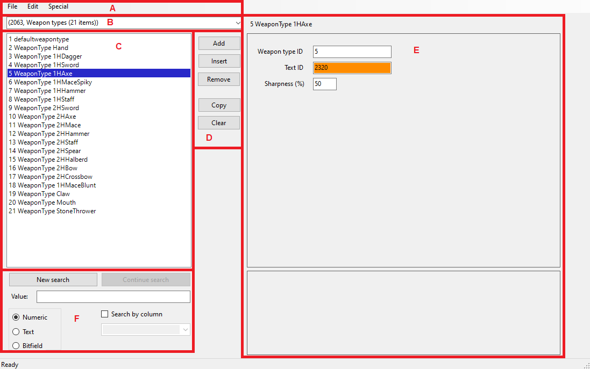
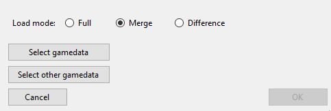
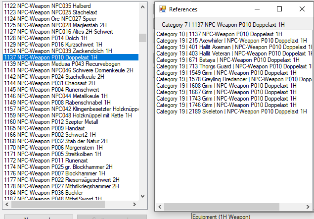
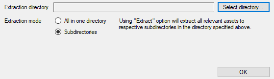
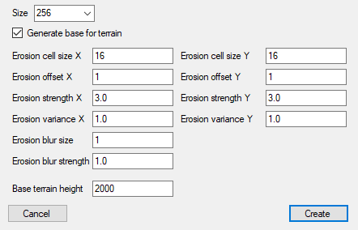
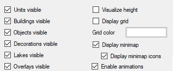

SpellForce Editor is a set of tools which aim to enable sophisticated modding of SpellForce: The Order of Dawn and its two expansions: Breath of Winter and Shadow of the Phoenix. This manual was written to provide a comprehensive overview of capabilities of this program.
This manual was last updated on 16.04.2024.
These are requirements your computer has to meet in order to run this program:
These requirement must be met if you want to run something other than GameData Editor:
Additiional tools useful when working with this editor:
At the time of writing this manual, the most recent version of the editor can be found here. Download the file and extract all the files to one folder (in this manual, the folder is assumed to be C:\). You can now run this program.
Upon running the program, you are greeted with this window:
On your first run, there is this information at the top: Game directory: NOT specified. As long as you don't specify game directory, you won't be able to run any of the tools shown in
To specify game directory, click the aptly named button,
For simplicity, it is assumed that your copy of SpellForce is installed in C:\SpellForce.
If your copy of SpellForce is corrupted (missing files), specifying game directory might not work. It is advised to re-install SpellForce when this happens.
There are 4 tools you can use: GameData Editor,
At the bottom, you can see a set of numbers, which mean the date of the last modification of the editor, as well as revision at that date (in format DD.MM.YYYY.X, in the screenshot above: 17.01.2023.1). These together mark the version of the editor you're using. If there is a new version available, a link will appear next to the version. Clicking it will lead you to the latest available version of the editor.
GameData Editor allows you to open, edit and save GameData.cff - the main database file for SpellForce, in which all text data, unit/item/building stats, races, spell parameters, loot tables, and much more is located.
After you open GameData Editor, select gamedata file you want to view. In this manual, it would be C:\SpellForce\data\GameData.cff. The editor window should look like this:
Open GameData.cff (Ctrl + O) - opens the Load Gamedata dialog.
There are 3 loading modes, and some features are only available in certain modes:
Save as... (Ctrl + S) - opens the Save Gamedata dialog. You can select the filename under which the gamedata will be saved.
Close - closes currently open gamedata file. You will be asked to save the file.
Exit (Alt + F4) - closes GameData Editor. If another file is already opened, you will be asked to save the file.
Undo (Ctrl + Z) - undoes the last change you've made in the editor.
Redo (Ctrl + Y) - redoes the last change you've undone.
Operation history... - opens Operation history window, where you can inspect the changes made to the gamedata in the current session so far.
Find all references... (F3) - opens References window.
Gamedata file contains at most 49 explicit categories, all of which can be selected and edited in this editor. Some of the more important categories are listed here:
Selecting a category from the drop-down menu will list all elements from the selected category.
When you select an element from the list, a detailed information about the element will apear in element view panel.
Add - adds a new element at the end of the element list. If an element is stored, a copy of that element will be added. Otherwise, an empty element will be added. The element will have its ID appropriately modified.
Insert - adds a new element under the currently selected element in the element list. If an element is stored, a copy of that element will be added. Otherwise, an empty element will be added. The element will have its ID appropriately modified.
Remove - removes currently selected element from the element list.
Copy - stores a copy of currently selected element. While an element is stored, Add and Insert buttons will be colored
Clear - discards currently stored element.
There are a few important aspects of the view panel:
Search panel allows you to quickly find elements which meet criteria specified by you.
The criteria are:
Pressing New search button will open a new window which will display elements from the given category that meet the search criteria. Pressing Continue search will perform search only on elements that are in the search result window. Changing category will clear the search result window.
When you open references window while an element from any category is selected, all elements from other categories which reference selected element will be listed. You can select any element from the references window to show it in element view panel.
Asset Viewer allows you to preview nearly all of the game assets - models, animations, music and sounds. You can also synchronize it with GameData Editor to preview units, buildings and such as you view them in the editor.
While holding any mouse button over view window, move mouse around to change camera angle.
While holding any mouse button over view window, use arrow keys to change camera position.
Scroll mouse wheel to change camera height.
Reset camera position (Space) - returns camera to its initial position.
Reload current scene (Ctrl + R) - serves as a hot-reload for the currently viewed scene. Useful when you're making a new model and want to see how it would look in game.
Extraction settings - opens a window in which you can specify asset extraction settings.
Effect Editor - does nothing. You can look around here, but nothing will happen. Work in progress.
You can select one of available view modes here.
When you select a mesh asset or an animated mesh asset from this list, it will appear in the view window. When you select a music, sound or message asset, the currently played audio will stop.
An Extract button next to the list allows you to extract the currently viewed asset. See Extraction settings for specific mechanics of extraction.
This element will show in Animations, Music, Sounds and Messages view mode. It will also show if you're currently viewing a unit in GameData Editor while Synchronize with GameData Editor view mode is selected.
Play button will play the selected animation or sound, Stop button will stop it.
You can move the time slider around to move to different parts of the curreently selected sound or animation.
This element will show in Animations view mode. It will also show if you're currently viewing a unit in GameData Editor while Synchronize with GameData Editor view mode is selected.
This list contains all animations that Asset Viewer found relevant to the currently viewed asset. Sometimes animations may exist for the element, but Asset Viewer won't be able to find them because of the naming convention being broken (for example, figure_boss_rohan_undead model lists animations for figure_boss_rohan_on_saurian_undead, though the animations clearly don't match the model).
Selecting an animation from the list will play it in the view window.
An Extract button next to the list allows you to extract the currently viewed animation. See Extraction settings for specific mechanics of extraction.
If Asset Viewer can't load an asset, an appropriate message will appear in status strip. Similarly, if Asset Viewer can't extract an asset, a message will also show here.
Toggle floor button allows you to show/hide the floor on which models are shown in the view window.
For any asset you're currently viewing, additional info is shown in the window. For example, how many bones the currently viewed animated model's skeleton contains, or how many vertices/triangles the currently viewed mesh has.
Map Editor contains all the necessary tools (and then more) to create new maps and/or edit existing maps.
If GameData editor is opened, or any time you open GameData Editor while Map Editor is open, the two will synchronize. As long as both GameData Editor and Map Editor are opened, you will be able to right-click
C:\SpellForce\data\GameData.cff will be used by both GameData editor and Map Editor while Map Editor is opened.
Closing either Map Editor or GameData Editor will desynchronize the other.
You can focus the main view by pressing middle mouse button anywhere on the main view.
While main view is focused, keyboard arrows will change camera position, and scrolling mouse wheel will change camera elevation.
While you hold middle mouse button on the main view, moving the mouse around will change camera angle.
Create new map - will show a prompt in which you can set initial map parameters.
Load map - loads the map of your choice. If another map is opened, you will be asked to save it. If the map can't be loaded for any reason, a message will show on the status strip.
Save map - saves the map under a new filename. You can overwrite existing maps. If the map can't be saved for any reason, a message will show on the status strip.
Close map - closes the current map. You will be asked to save it before that happens.
Exit - closes the map editor. If a map is opened, you will be asked to save it.
Undo (Ctrl + Z) - undoes the latest changes you've made to the map.
Redo (Ctrl + Y) - redoes the last changes to the map you've undone.
Operation history... - opens a window with all changes you've made to the map. Changes marked
Import/Export heightmap.. - opens Import/Export Heightmap window.
Visibility settings - opens a window in which you can turn on/off certain features of the map. This is editor-only and does not have any impact on the game.
Options in the first column show/hide various features of the map, like units, objects or decorations.
There are currently 6 modes to choose from:
Each of these modes is extensive enough that they have their own page dedicated to them (see links above).
Each of editor modes has specific set of tools and options, most of which will be shown in this area. More on this on editor mode pages.
This is the main area of the editor. The map and all its entities are shown here.
When you move mouse cursor over the terrain, a 3D cursor will follow the mouse cursor to show you which area will be affected by tool operations, like height modification or entity placement.
If enabled, a minimap is shown on the bottom right of the display. While you hold left mouse button over its top-left corner, dragging the mouse will resize the minimap. Clicking the minimap with left mouse button will move the camera to where you clicked on the minimap.
While the map is loading, status strip will indicate the loading stage of the map. If the map was successful, Ready message will appear. Otherwise, an error message will be shown here.
If an error occurs while saving the map, a respective error message will show in the status strip.
Moving the mouse cursor over the terrain will display various information about the terrain at the 3D cursor position - namely, its XY grid position, its height (H), texture ID (T), decoration set ID (D) and lake ID (L).
Camera speed slider controls how fast the camera movement with keyboard arrows is.
SQL Modifier is a tool with which you can modify various Lua SQL scripts associated with the game. These scripts contain information about, for example, which model should be linked to a given item, or which units are spawned from a given coop camp type.
If a given script can't be found in game directory (C:\SpellForce\script\), the script from internal game files will be used instead.
If you have GameData Editor opened and gamedata is loaded, Starting units and Wave units will display unit names next to unit IDs.
On the left, there is a list of items stored in sql_item.lua. You can add or remove items using respective controls. If you have GameData Editor opened and gamedata is loaded, item names will be displayed next to item IDs in the list.
On the left, there is a list of objects stored in sql_object.lua. You can add or remove objects using respective controls. If you have GameData Editor opened and gamedata is loaded, object names will be displayed next to object IDs in the list.
On the left, there is a list of buildings stored in sql_building.lua. You can add or remove building using respective controls. If you have GameData Editor opened and gamedata is loaded, building names will be displayed next to building IDs in the list.
Each head in sql_heads.lua only has two parameters: Mesh (male) is the male variant of the head with the given ID, Mesh (female) is the female variant of the head with the given ID. You can add or remove heads using respective controls.
Scripts found in game paks are packed to bytecode format, which renders editing them nearly impossible. This decompiler allows you to restore the file to readable (and editable) format.
Decompile file... - select a file to decompile.
Decompile directory... - select a folder. All scripts in that folder and all its subfolders will be decompiled.
Replace original scripts - if unchecked, for each decompiled script a new script with _d suffix will be created. If checked, decompiled script will replace the original script.
Result of decompilation is seen on the right - Scripts found, Successfully decompiled, Failed to decompile.